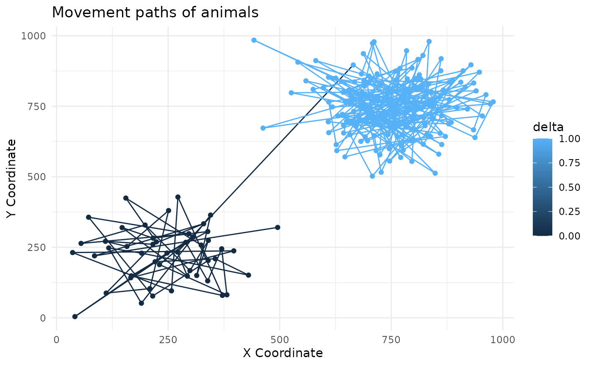
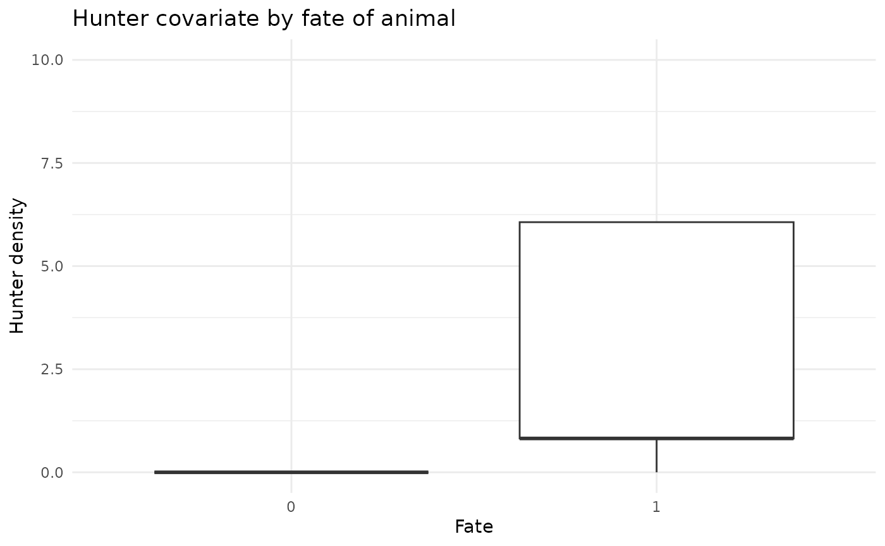
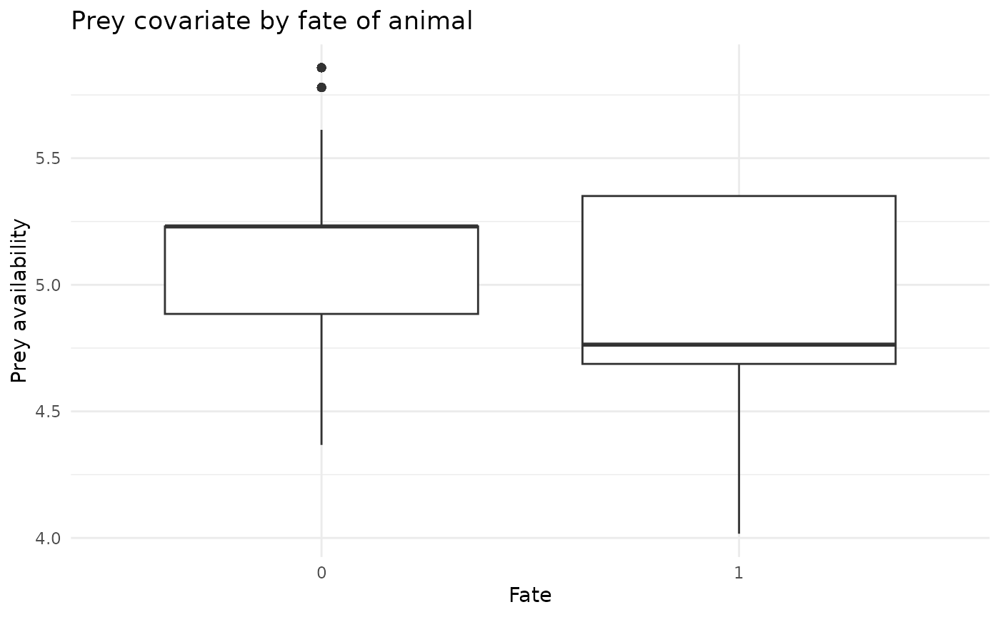

Simulating Animal Movement and Mortality Data
Source:vignettes/simulating-data.Rmd
simulating-data.RmdSimulate a dataset
sim <- simulate_data(n_animals = 100, n_fixes = 200, n_dead = 20, n_knots = 25)
str(sim, max.level = 1)
#> List of 19
#> $ n : num 100
#> $ max_locs : num 200
#> $ n_locs : num [1:100] 48 194 111 23 195 137 177 61 39 31 ...
#> $ time_step : num [1:100, 1:200] 1 1 1 1 1 1 1 1 1 1 ...
#> $ delta : num [1:100(1d)] 0 0 0 0 0 0 1 0 0 0 ...
#> ..- attr(*, "dimnames")=List of 1
#> $ n_knots : num 25
#> $ knots_ce : num [1:25, 1:2] 100 300 500 700 900 100 300 500 700 900 ...
#> ..- attr(*, "dimnames")=List of 2
#> $ sigma : num 1
#> $ rho : num 100
#> $ cell_mat : num [1:100, 1:200] 8 6 7 2 6 6 20 6 3 7 ...
#> ..- attr(*, "dimnames")=List of 2
#> $ ind_cell_effect: num 1
#> $ beta_prior : num [1:2] 0 1
#> $ llambda_prior : num [1:2] 0 2
#> $ alpha_prior : num [1:2] 0 1
#> $ num_hab_covs : num 2
#> $ hab_cov : num [1:100, 1:200, 1:2] 5.18 4.88 5.23 5.86 4.88 ...
#> $ num_indv_covs : num 2
#> $ z : num [1:100, 1:2] 16 20 6 11 8 7 20 17 18 17 ...
#> ..- attr(*, "dimnames")=List of 2
#> $ raw_data :'data.frame': 10957 obs. of 9 variables:Plot out simulated dataset - individual monitoring length and fate
df <- data.frame(id = 1:sim$n, n_locs = sim$n_locs, delta = sim$delta)
ggplot(df, aes(x = id, y = n_locs)) +
geom_point(aes(color = delta)) +
geom_segment(aes(xend = id, yend = 0, color = delta)) +
labs(x = "Animal ID", y = "Time steps") +
theme_minimal() +
ggtitle("Monitoring length and fate of each animal") +
theme(axis.text.x = element_text(angle = 90, hjust = 1)) +
coord_flip()Plot out simulated dataset - individual movement paths
df <- sim$raw_data
df <- df[df$animal_id %in% c(1,13),]
ggplot(df, aes(x = x, y = y, color = delta)) +
geom_path() +
geom_point() +
labs(x = "X Coordinate", y = "Y Coordinate") +
theme_minimal() +
ggtitle("Movement paths of animals")
Plot some covariates by fate
df <- sim$raw_data
df$delta <- as.factor(df$delta)
ggplot(df, aes(x = delta, y = hunter)) +
geom_boxplot() +
labs(x = "Fate", y = "Hunter density") +
theme_minimal() +
ggtitle("Hunter covariate by fate of animal") +
scale_y_continuous(limits = c(0, 10))
ggplot(df, aes(x = delta, y = prey_avail)) +
geom_boxplot() +
labs(x = "Fate", y = "Prey availability") +
theme_minimal() +
ggtitle("Prey covariate by fate of animal")